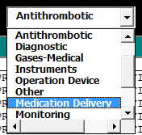
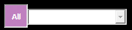
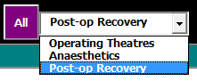

Edit Equipment Information¶
‘Edit Equipment’ is launched from the ‘Equipment Management’ form. The information on this form and the controls will reflect the context in which the form was launched. For example, if the user launches ‘Edit Equipment’ as a result of following the prompt to add new equipment when searching for an item not currently in the database, the SAID number will be the one typed into the search field. If the form was launched from the New Equipment button, no SAID number will be in the SAID field: the user will need to enter this or the record cannot be saved.
Device Name and Type¶
The name of a device
The main devices list-box displays a list of devices that are part of a device type group. The device types are in a special field called a “dropdown”, characterised by a textbox with a down-pointing arrow at the right of the field:
Selecting from this dropdown will display all devices in the list below that correspond to the selected device type. Some of the possible types include: “Antithrombotic”, “Gases-Medical”, “Medication Delivery”, “Patient Warming”, “Monitoring” and so on.
Device Status¶
The list of devices in the upper listbox show all devices that correspond to the device type selected in the Device Type dropdown:

The currently selected device is the one that is highlighted. The device’s SAID number will display in the Search field.
The columns in that listbox are:
| Column | Description |
|---|---|
| SAID | A unique identifying number issued by Materiel Mgmt |
| Owner | Location: OT (Operating), AN (Anaesthetics), PA (PACU) - this column will not display if the [Owner Toggle] is toggled off and the dropdown next to it displays an Owner |
| Status | “In Service”, “To Repairs”, etc |
| Description | The name of the device, as recognised by Mat Mgmt and BTS |
| Test-n-Tag Date | Date of last BTS Test-n-Tag |
| Located-Sighted | Where (or if) the device was last sighted |
The last two columns were added to help identify devices that had not been sighted - and thus may have disappeared from the unit or have through some other means gone missing. This is necessary for yearly inventory purposes.
As the user can see from the above table, one of the approaches to managing devices is by assigning the device a status. No device is infinitely useful: thus, it has a lifespan and a status within that lifespan: i.e., “In Service”, “To Repairs”, “Decommissioned” or “On Loan”, for example.
The second column - Owner - refers more to the most likely location the device would occupy. The view can be modified to list only devices with a specific owner. Above the list, to the right of the Device Type dropdown, is a Owner toggle button. When set to [On] (the default setting):
the list view will display all devices of type. [All] toggled [On] also clears and disables the Owners dropdown. Toggling [All] to [Off]:
enables the Owners dropdown: the user can then select which owner’s devices to display in the Devices List (and the owner column will no longer display in the list).
The Devices List only displays devices that are active in the system and does not display devices with a status of “Decommissioned”, so as to minimise clutter. In order to see those devices, from the Filter Menu, select “All Devices” from the bottom of that dropdown. To remove “Decommissioned” devices from view, select “Active” from the Filter dropdown.
Device Details¶
In the course of its lifespan, a device will see a number of events. By definition, when a device changes status, it is considered a new event. Recording a change of device status is done in the “Add or Edit Equipment” form.
This listbox displays all events for the currently selected device in the Devices List. Changing which device is selected will change the events displayed.
Button Bar¶
There is some duplication of button functions in the traditional menu at the top of the main form.
The button bar’s buttons provide a quick and easy way to do the most common tasks.

Save - The Save button saves the event information to the EventData worksheet. If this was an edit of existing information, it will save over that record.

ShowSheet - The Show Sheet button closes the Manage Equipment form, makes the DEVDATA worksheet the active worksheet and drops the user onto the record in that sheet corresponding to the last selected device in the Device List.

Help - Opens Firefox and displays this document.
{kind=link}
Device Image¶
When available, the image displayed corresponds to the currently selected device in the Device List. If no item is selected, or no picture exists for the selected item, the image is just a question mark, the default image.
Unlike on the Equipment Management form, the image is clickable, allowing the user to select a new image from the images folder. [1]
If a record for the device exists in the workbook, it will appear in …